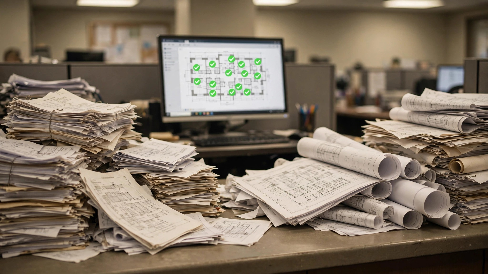

HUD Offered Cities $3 Million to Let AI Review Building Permits. Your City Probably Didn't Apply.
Edmonton issues same-day residential permits with AI. Honolulu cut processing time 70%. The federal government put real money behind this. Most building departments let the deadline pass.

I have submitted building permits in fourteen jurisdictions across three states over twenty years, and in that time exactly one thing has changed about the process: plans that used to ship in a cardboard tube now arrive as sixty-page PDFs uploaded to a portal that looks like it was designed during the second Bush administration. A reviewer on the other end still prints them out, marks them with a red pen, scans the marked pages back into the system, and emails you a rejection letter that references page numbers that no longer match because she was looking at revision two while you already uploaded revision three.
So when HUD announced in late May that it would pay cities up to $3 million to deploy AI-powered building code permitting systems, naming actual platforms that work right now (PermitFlow, Blitz Permits, CivCheck, Permitify), I expected a stampede of applications from building departments that have been drowning in backlogs for years and finally had someone offering to buy them a life preserver.
Applications closed July 13. Most building departments in the country never opened the page, which tells you everything you need to know about why residential construction in America still takes fourteen months for a project that Japan finishes in four.
What Happens When a City Actually Tries
Edmonton, Alberta, deployed an AI auto-review feature for single and semi-detached residential homes and started issuing same-day permits in qualifying areas, a result so dramatic it sounds like a vendor pitch until you realize that the old timeline was twenty days. Not twenty days of careful structural analysis, but twenty days of a plan sitting in a queue while a reviewer checked whether the setback matched the zoning table and the lot coverage calculation added up correctly, tasks that an algorithm handles in seconds because they require no judgment, only arithmetic and a lookup table.
Honolulu's Department of Planning and Permitting launched CivCheck in December 2025 for residential applications and cut processing time by 70 percent, a reduction that Dawn Takeuchi Apuna, the department's director, attributes less to replacing reviewers than to catching errors before formal submission. Her team's analogy is TurboTax for building permits: you answer the questions, the system flags what is missing, and by the time a human reviewer opens the application it is actually complete, eliminating the three-week cycles of rejection, revision, and resubmission that consume most of the timeline in a typical residential permit review.
Denver deployed the same CivCheck tool. Austin partnered with Archistar for AI-assisted zoning review. Seattle's mayor signed an executive order in June directing all development applications through an AI pilot program led by a dedicated Permitting and Customer Trust team with full public rollout expected by the end of 2026. In Pasco County, Florida, AutoReview.AI, a system developed at the University of Florida that checks site plans against the entire 800-page Florida Building Code, reduced plan review from weeks to thirty minutes, prompting county commission chairman Jack Mariano to note that "turnaround time improved and backlog shortened" during the system's first months of operation.
None of this is experimental anymore, and the cities that adopted early are not reporting regrets or liability incidents or mass reviewer layoffs. Instead, they report that the queue is shorter, the applicants are happier, and the reviewers are spending their time on actual engineering judgment instead of counting setback dimensions on page nine for the third time because the builder forgot to update them after moving the garage.
What Permit Delays Actually Cost
A builder carrying a construction loan on a $420,000 home at 7.5 percent interest pays roughly $86 per day on $300,000 in outstanding draws, which means that a permit review taking thirty days longer than necessary adds approximately $2,600 in carrying cost that gets folded into the contract price without the buyer ever seeing a line item that says "your city was slow."
Multiply that across 1.2 million single-family housing starts annually and you arrive somewhere north of $2 billion in aggregate carrying costs attributable not to construction delays, not to material shortages, not to labor problems, but to permit applications sitting in queues because a plan reviewer is working through a stack of submissions in the order they arrived, spending half her time on applications that will get rejected for missing a drainage note on page fourteen and resubmitted two weeks later with the drainage note added and the window schedule accidentally deleted.
If AI review cuts 70 percent of that delay, as Honolulu demonstrated rather than projected, aggregate annual savings exceed $1.5 billion nationally, a number that makes HUD's $3 million grant look less like federal spending and more like a rounding error on the waste it was designed to eliminate.
Why Most Cities Let It Pass
Julia Richman is now vice president of government affairs at Clariti, the company behind CivCheck, but before that she ran IT operations for the State of Colorado and the City of Boulder, and in 2022 she tried to renovate her own home in Denver, where permit delays cost her family nearly $100,000 when the city changed zoning regulations mid-process and her application got buried under a flood of rushed submissions from builders trying to beat the new rules.
She knows both sides of the counter, and the barriers she describes are not primarily technical but rather organizational, legal, and political, the kind of obstacles that do not yield to better software alone.
Most building departments in America are small, sometimes just two plan reviewers in a town of 15,000 who are not evaluating SaaS procurement options because they are trying to get through the stack before the next council meeting decides to freeze their budget. Deploying a cloud-based AI system, even one that requires no hardware, still means writing an RFP, evaluating vendors, negotiating a contract, training staff, and managing a transition that would consume the entire bandwidth of a two-person office for months.
Liability compounds the inertia. If an AI pre-checks a residential plan and flags it as code-compliant, and the building later develops a structural failure, the question of who bears responsibility, whether the software vendor, the city that adopted it, or the plan reviewer who trusted the output, remains unresolved in most jurisdictions, and building officials who have spent their careers managing personal liability exposure are not eager to become test cases for a legal theory that no court has yet examined.
Building codes themselves present a subtler obstacle: the International Code Council's model codes are copyrighted, and digitizing them for AI parsing raises questions that most municipal attorneys would rather defer to the next administration, while local amendments, which can number in the hundreds for a single jurisdiction, render national AI tools unreliable without expensive customization that small departments cannot justify.
And then there is the workforce fear that traveled faster than any grant announcement. Denver's AI deployment coincided with discussions about cutting fifty-nine permitting positions, and whether or not those cuts materialized, the headline reached plan reviewers in other cities who concluded, reasonably from their vantage point, that AI permitting is a polite way of saying AI is replacing them, a conclusion that is wrong in practice, since every adopting city has preserved the human review role for engineering judgment, but one that is effective at killing internal advocacy for a technology that requires the people who use it to believe it will not eliminate their jobs.
What AI Permitting Does and Does Not Do
An honest accounting: AI permit review catches the things that should never consume a trained reviewer's time in the first place: missing signatures, setback calculations that do not match the zoning overlay, incomplete energy compliance forms, window egress dimensions that fail IRC Section R310 by two inches. Those application-quality problems that drive the majority of rejection-revision-resubmission cycles and account for most of the delay in residential permitting.
A 2026 analysis across multiple adopting jurisdictions identified the core pattern: permitting delays stem less from the complexity of technical reviews than from application quality at intake, a finding that reframes the problem from "we need more reviewers" to "we need better applications," which is precisely the problem AI is built to solve because it requires no judgment, no experience, and no professional discretion, only the ability to compare a submitted document against a set of binary requirements and flag where they diverge.
What AI cannot do, and what no vendor claims it can despite what the headlines imply, is evaluate whether a non-standard structural detail is safe, decide whether an unusual foundation design meets the intent of the code rather than just its letter, or exercise the professional judgment that develops over twenty years of reviewing plans and knowing which details actually fail in the field because you have seen them fail, in person, on job sites that were supposed to pass inspection.
Cities that present AI as a substitute for that judgment, rather than a tool that frees trained professionals to exercise it on the cases that actually require expertise, are making a promise the technology cannot keep and creating a risk that none of the early adopters have yet encountered but that every honest person in this industry should be watching for.
What Comes Next
New York City's Department of Buildings processes roughly 275,000 applications per year through a borough-based organizational structure that, according to a July 2026 report from the city's Commission on Government Efficiency, "has changed little in more than a century," a description that would be darkly comic if it were not also accurate for the vast majority of the approximately 19,000 building departments across the country, most of which operate on workflows designed before the internet existed and have never seriously evaluated whether those workflows still make sense.
HUD's grant program was explicitly designed to generate evidence for future funding rounds, which means another opportunity is coming for every city that let this one pass, and the cities that did apply will have data showing what the technology delivers in practice rather than in a vendor demo. For builders and developers operating in jurisdictions that still process permits on a timeline that would embarrass a mid-century postal service, the only useful advice is the same advice I have been giving for twenty years: submit a perfect application on day one, because every error you leave in the plans adds two weeks to your schedule and $1,200 to your carrying cost, and until your city decides that an algorithm could catch those errors before a human reviewer has to, that is the world we are building in.
Limitations
This analysis relies on self-reported performance data from early-adopting cities that have an inherent incentive to highlight positive outcomes, and independent before-and-after studies controlling for seasonal variation, application volume changes, and applicant self-selection have not yet been published for any jurisdiction. Carrying cost estimates use national median home prices and average construction loan rates; actual costs vary dramatically by market, with some high-cost metros experiencing per-day carrying charges three to four times the national average. How many cities applied for the HUD grant is not publicly available as of this writing. Approximately 19,000 building departments exist across the United States, but this figure includes jurisdictions of vastly different sizes, many processing fewer than a hundred permits annually and unlikely to benefit from AI deployment under any reasonable cost-benefit analysis.
What This Means for You
If you are a builder or developer: Ask your local building department whether they use or plan to adopt AI pre-screening for permit applications, and if a builder-facing pre-check portal exists through platforms like PermitFlow or CivCheck, use it before submitting, because catching errors before intake can cut weeks off the review timeline and save thousands in carrying costs that would otherwise get baked into the contract price with no visible explanation to the buyer.
If you are buying a new home: Your builder's timeline estimate includes permit review, and in jurisdictions without AI-assisted intake, that can mean four to eight weeks of idle time with the construction loan running, an invisible cost that increases the final price of your home without appearing as a line item anywhere in the transaction. Ask whether the local jurisdiction has modernized its permitting process, because it is a legitimate factor in total cost.
If you work in a building department: HUD designed this grant program to inform future funding, which means another round is coming and the jurisdictions that applied first will have the evidence to show what works. Start the internal conversation now, because the platforms named in the grant are production-ready, the liability questions are real but manageable through the professional-judgment-preserved frameworks that Edmonton and Honolulu have already implemented, and your reviewers will spend more time doing the work they were trained for instead of counting setback dimensions for the third time.